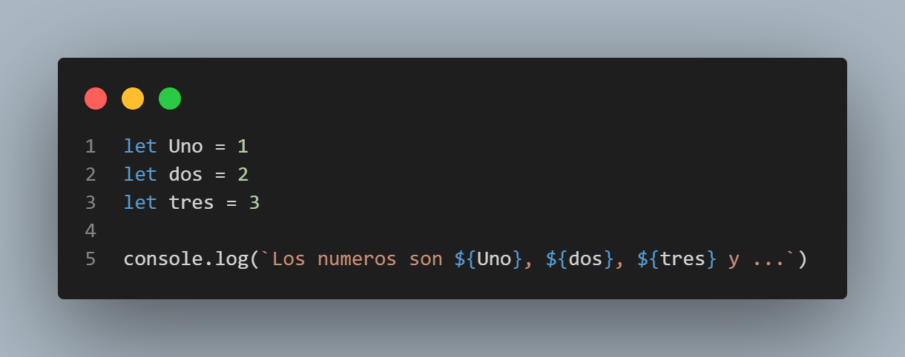

Ejercicios Templates String
- Concatena dos variables
nombre y apellido utilizando template strings.

- Utiliza un template string para mostrar un mensaje con el resultado de una operación matemática.
- Combina un string estático con el valor de una variable utilizando template strings.

- Crea una plantilla de URL utilizando variables y template strings.
- Genera un mensaje personalizado utilizando template strings y variables.
- Concatena múltiples variables utilizando template strings.

- Crea un mensaje de bienvenida utilizando template strings y el valor de una variable.
- Combina texto y el resultado de una expresión matemática utilizando template strings.

- Utiliza template strings para mostrar el contenido de un objeto con sus propiedades.
- Crea un mensaje utilizando template strings y una variable booleana.

- Concatena un string con el valor numérico de una variable utilizando template strings.
- Crea una lista desordenada de elementos utilizando template strings y un array de datos.
- Genera una tabla HTML utilizando template strings y un array de objetos.
- Utiliza template strings para mostrar un mensaje de error con detalles adicionales.

- Crea una lista ordenada numerada utilizando template strings y un array de datos.

- Concatena varios strings utilizando template strings y operadores de concatenación.

- Combina texto estático y el resultado de una función utilizando template strings.

- Utiliza template strings para mostrar información de un usuario con sus propiedades.

- Crea una tabla HTML con filas dinámicas utilizando template strings y un array de datos.
- Genera un mensaje utilizando template strings y operadores ternarios.